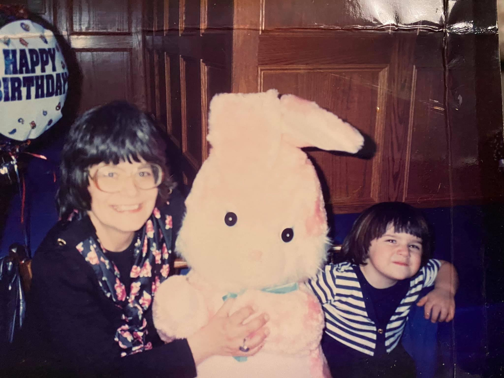

Kathleen Z. Morse
The woman who survived and loved

My mother on the left and me on the right, on my third birthday
Here is a timeline of Kathleen's Life
- 1951 - Born in New Jersey, USA, on April 2nd
- 1979 - Met my father, Jonathan at a work dinner with her boss (he was the boss' son)
- 1980 - Married Jonathan in New Jersey
- 1987 - I was born in Pennsylvania
- 1990 - My brother was born in New York
- 2001 - This is the year she had her life-altering strokes and became wheelchair-bound
- 2003 - She moved back home to be with family who would care for her
- 2009 - She and her family were kicked out of their house and Kathleen was forced to be moved to a long-term nursing facility
- 2016 - On December 30th, she passed away with her children around her
"Happy Easter Charlanne, I love you"
--Kathleen Z. Morse